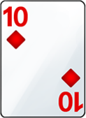

<!DOCTYPE html>
<html lang="en">
<head>
    <meta charset="UTF-8">
    <meta name="viewport" content="width=device-width, initial-scale=1">
    <!-- 定制版 ionic 样式 -->
    <link rel="stylesheet" href="https://unpkg.com/vonic@2.0.0-beta.11/dist/vonic.min.css">

    <!-- 依赖库 axios/vue/vue-router -->
    <script src="https://unpkg.com/axios@0.15.3/dist/axios.min.js"></script>
    <script src="https://unpkg.com/vue@2.1.10/dist/vue.min.js"></script>
    <script src="https://unpkg.com/vue-router@2.2.1/dist/vue-router.min.js"></script>

    <!-- vonic 核心文件 -->
    <script src="https://unpkg.com/vonic@2.0.0-beta.11/dist/vonic.min.js"></script>
</head>
<body>
<von-app></von-app>
<style>
    .page.has-navbar .page-content {
        padding-top: 100px;
    }

    .ft {
        padding: 10px 0 0 0;
        z-index: 999;
        width: 100%;
        height: 15%;
        position: fixed;
        left: 0;
        bottom: 0;
    }
</style>
<script type="text/x-template" id="index">
    <div class="page has-navbar" v-nav="{title: '测试'}">
        <div class="page-content">
            <scroll style="height: 78%;margin-top: 80px">
                <div class="item">
                    <h2>Cliven</h2>
                    
                    
                    
                </div>
            </scroll>

            <div class="ft item" style="background: lightslategray">
                <p>Cliven 的手牌:</p>
                
                
                
            </div>
        </div>
    </div>
</script>
<script>
    const Index = {
        template: '#index',
        methods: {}
    };

    const routes = [
        {path: '/', component: Index},
    ];

    Vue.use(Vonic.app, {
        routes: routes
    })

</script>
</body>
</html>